ホルンの明太マヨフランス
2011/11/12
食パンにめんたいがぎっしりです。
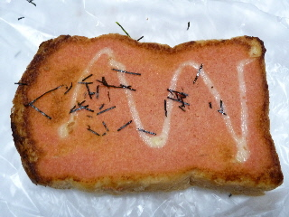
これだけ明太が塗ってあるとなんかお得な気分ですね。
食パンなので柔らかめで食べやすかったです。味も均一で、どこを食べても明太味がていいですね。
島根県出雲市平野町302
閉店しました。
2011/11/12
食パンにめんたいがぎっしりです。

これだけ明太が塗ってあるとなんかお得な気分ですね。
食パンなので柔らかめで食べやすかったです。味も均一で、どこを食べても明太味がていいですね。
2011/11/12
シュクレドフランスです。名前間違ってたらごめんなさい。
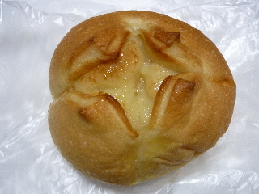
パンとバターと砂糖で地味なんですけど、この組み合わせが美味しいんですよね。
パンを美味しく食べるにはやっぱバターです。砂糖が入って甘くてさらに美味しいです。
定番過ぎて普段あんまり気にしない組み合わせですが、出来たてでいい匂いがしていたので、買って帰りました。
2011/11/12
パン屋さんホルンの広告が新聞の折り込みチラシにありました。
11月12日は11月の新商品「クリームチーズパイ1個」と「中酪牛乳1個」をプレゼントだそうです。
めちゃくちゃお得なので早速買いに行きました。
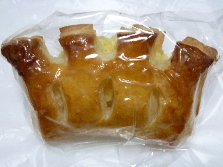
もらったクリームチーズパイです。
パイの層が沢山あってよかったです。
甘いクリームチーズも美味しかったし、チーズが水っぽくないので、パイがサクサクとしていていい食感でした。
次は買いに行きたいって思いました。
2011/02/14
パン屋さんでバレンタイン商品が販売していました。
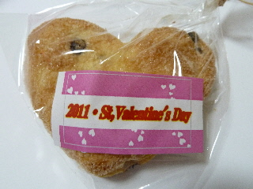
チョコチップ入りのシンプルなパイでした。
バレンタイン用のチョコってそれなりの値段がするので、義理とかで買うと高額になっちゃいますが、これだったら値段のわりに量があっていいかなって思いました。
バレンタインがあったってことは、ホワイトデーでも企画商品があるかもしれませんね。
パン屋さんですが、ちゃんとしたシュークリームでした。
130円でお買い得です。
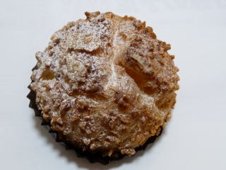
ナッツが沢山付いたシュー生地と、甘すぎないクリームがとっても美味しかったです。私はここの店でコレが一番好きかも？って思いました。
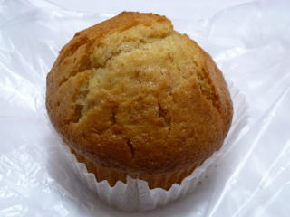
上はハニージンジャーマフィンです。名前の通り複雑な味でした。
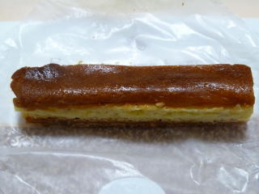
ちょっと形が崩れていますが、チーズケーキも販売していました。
色んな商品がありますね。
2010/3/14
パウンドケーキみたいなパン、ミルクパウンド（チョコチップ）です。
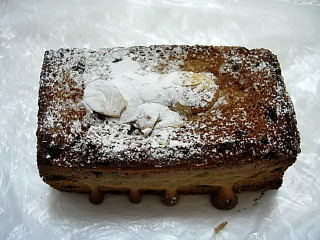
見た目パウンドケーキの様ですが、ちゃんとパンの味がしました。百円代でケーキのようなパンが買えるので、なんだか得した気分です。
固めの食パンにチョコチップが入ってる感じがしました。ケーキのようにフォークで切って食べようとしたんですが、固くて切れませんでした。薄めにスライスすれば食べ易かったかな？って思いました。
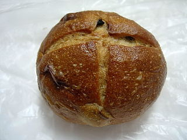
「アサムラサキ レーズンロール」です。
外側がコンガリとハード系のパンのようになっていました。コゲ味が美味しいですね。レーズンともよく合ってました。
個人的には中もハードだったらもっと好きかなって思いました。
2009/3/22
食の祭典2009in出雲ドームで、パン屋さんホルンのブースで販売していた生キャラメルです。
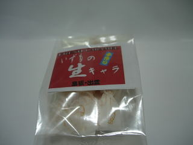
レストランの「ビストロ ヴルーテ」のブースでも同じものを販売していたので、どうしてかな？と思ったんですが、共同開発なんですね。パッケージの裏側に「中酪・ヴルーテ コラボ商品」って書いてありました。
生キャラメルって高価なので買った事なかったんですけど、量が少ない分お買い求め易くなっていたので、買いました。300円だったかな？
生キャラの感想ですが、とっても柔らかいんですね。普通のキャラメルと違って、歯ごたえがほとんどありませんでした。味はミルク味が強く、ちょっとバターっぽい感じがしました。甘いんですけど、後味がスッキリとしていました。
2009/1/18
チョコバナナパイってことで、甘いお菓子を想像していたんですが、そんなに甘くなかったです。サクサクっと食感も味も軽いパイでした。
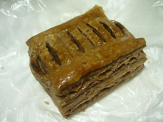
パイがチョコ色をしているのでチョコ味が強いのかなと思ってたんですが、案外チョコ味は薄く、中に入っていたバナナの味がふんわりとしました。
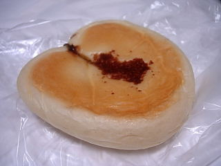
こっちはなんだか面白い味のパンでした。アラ！ビアータって名前だったかな。
ホルンの2階は喫茶店みたいになっていたんですが、もうなくなってました。
ちょっと寂しいですね。
2008/11/2
栗が入ってるのかなと思ったんですが、栗あんが入ったパンでした。
デニッシュあんパンの栗バージョンみたいでした。
栗の味がわりとしっかりしてて、美味しかったです。パンっていうよりお菓子っぽかったです。
こっちはピロシキです。
ミンチの味がしっかりとして、とっともジューシーでした。
今日はイベントをしていて、牛と馬がいました。
2008/2/17
チョコが沢山入ってますね。なのでチョコ味が強めで甘かったです。
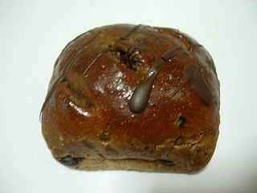
レーズンのようなドライチェリーがちょっと入ってたんですが、それがちょっとすっぱくて味のアクセントになってました。
マフィンっていうとミスドみたいなのマフィンを想像するんですが、ここのマフィンはそれより大きくて、ちょっと地味な色あいの商品でした。
ミスドのドライなマフィンと違って、ここのマフィンはしっとりとしつつふんわりした商品で、ちょっと蒸しパンっぽい感じです。
しっとりしてて口当たりもいいですし、やさしい感じの甘さでなかなか美味しかったです。
また行ったらマフィンを買おうと思いました。
山陰中央新報の「さんさん」のコーナーに宣伝が載っていたので入ってみました。
ホルンの2Fはカフェホルンっていうみたいです。
パン食べ放題、サラダ、スープ、ドリンク付きで480円は激安です。
パンは1Fのパン屋さんから運んできたものが、小さくカットしてテーブルの上に置いてあるので、そこから好きなものを好きなだけ食べれます。
値段が値段なので単価の高そうなパンは出てこないですが、色んな種類のパンが食べれるので良かったです。
あと、メニューを見たら、牛乳のおかわりが有料になってました。残念です。
オープンして半年でメニューが変わっているとは。
バイキングもひょっとしたらなくなるかも？行きたい人は早めに行った方がいいかも？
2007/8/26
パン屋さんのソフトクリームです。
パン屋さんっていっても、牛乳屋さんの中にあるお店なので、ソフトクリームがあってもいいですよね。
ミルクソフトは、甘くてミルク味が濃い感じで、昔からあるようなミルクソフトでした。
観光地とかではこうゆう定番的なソフトを食べたいです。
私は、ミルクソフト以外の商品は「どんな味？」って期待して食べるんですが、ミルクソフトを食べたい時は濃くて甘いミルクソフトを期待して食べるので、このタイプは嫌いじゃないです。
あと、フレンチトースト（ミルク）とたまごドーナッツを食べたんですが、両方とも家庭的な味がしました。
2007/4/14
出雲市平野町の中酪牛乳内に出来たパン屋さん「ホルン」に行きました。
パンは「タカキベーカリー」さんのようで、見たことあるパンが並んでました。これからオリジナル商品がいっぱい出来るといいですね。
2Fにある喫茶店で、買ったパンを食べれるようになってました。
喫茶店では、牛乳が120円と良心的な価格になってて、しかもおかわりが出来ます。
でも、客席とレジが真っ直ぐ見えないレイアウトになっているので、ちょっとおかわりはたのみにくかったです。大勢でワヤワヤ行けばおかわりがしやすいかもしれませんね。
パンと牛乳だったら、大手ハンバーガー屋さんやドーナッツ屋さんよりも安いかもしれません。